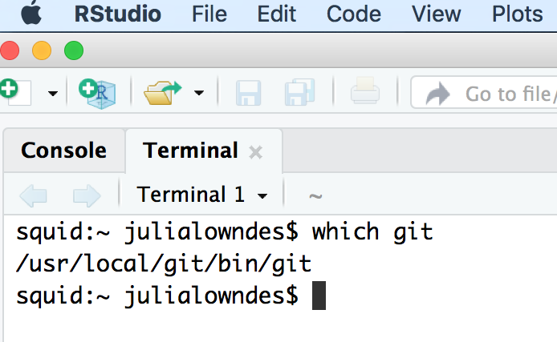
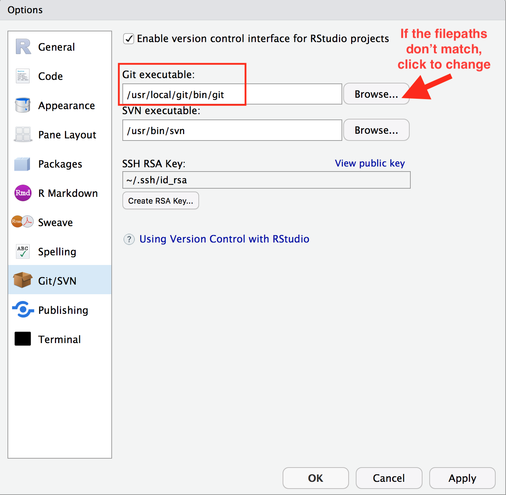
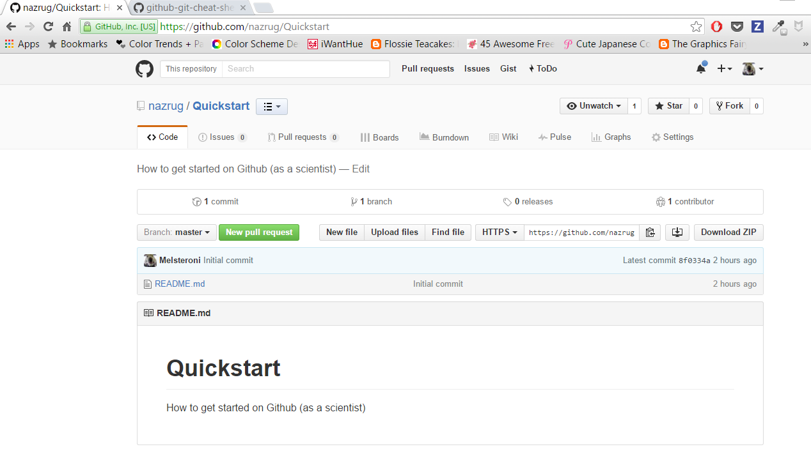
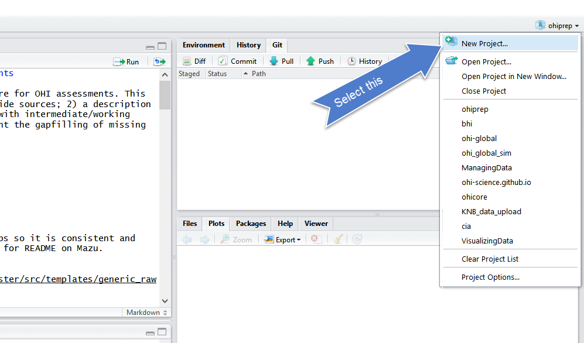
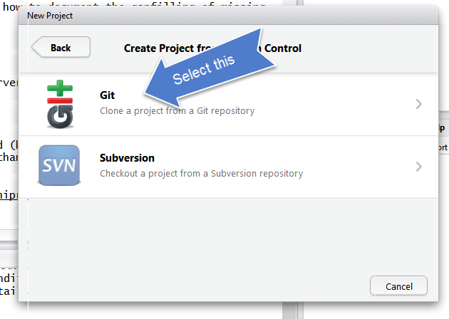
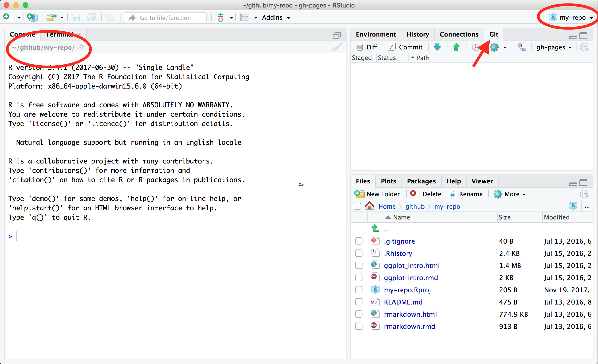
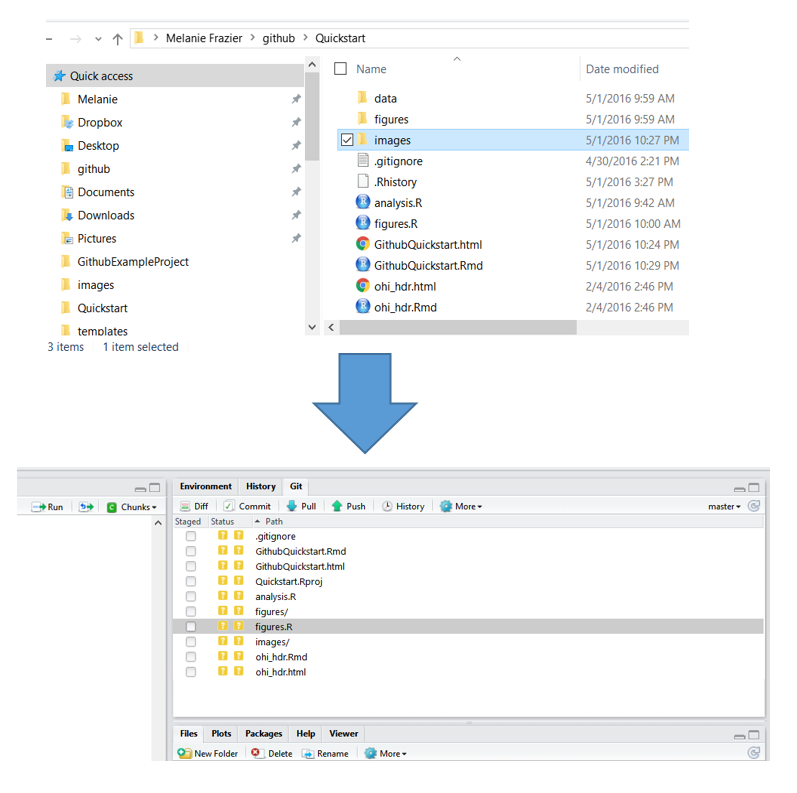
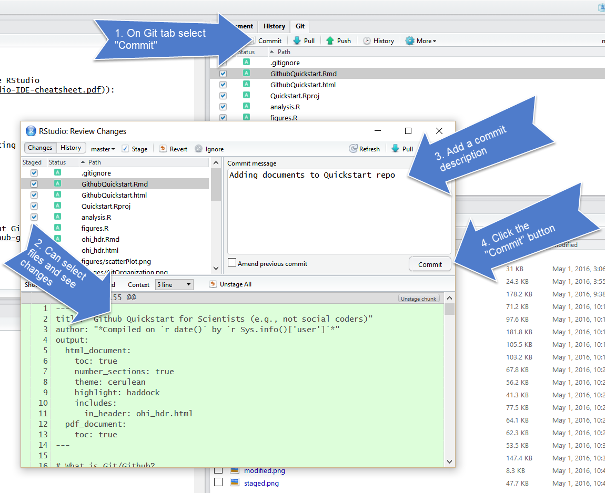
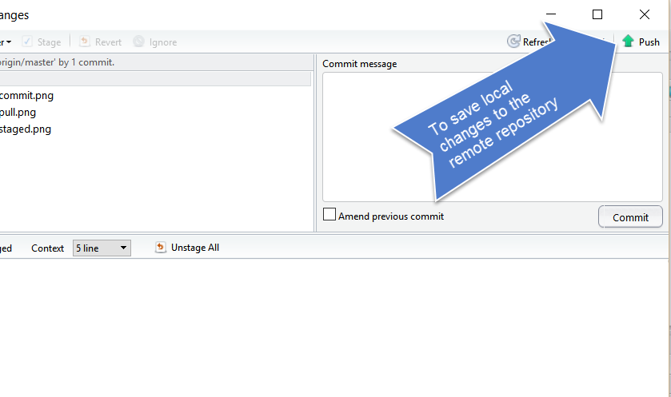

Chapter 4 GitHub
TO ADD:
- create data/ folder. (GH won’t see an empty folder so put a README in it).
I like to turn off workbook mode.
Create the github repo: ‘r-and-excel’
4.1 Summary
We will learn about version control using git and GitHub, and we will interface with this through RStudio. Why use version control? To save time when working with your most important collaborator: you.
4.2 Objectives
Today, we’ll interface with GitHub from our local computers using RStudio. There are many other ways to interact with GitHub, including GitHub’s Desktop App or the command line (here is Jenny Bryan’s list of git clients), but today we are going to work from RStudio. You have the largest suite of options if you interface through the command line, but the most common things you’ll do can be done through one of these other applications (i.e. RStudio and the GitHub Desktop App).
Here’s what we’ll do after we set up git on your computers:
- create a repository on Github.com
- clone locally using RStudio
- learn the RStudio-GitHub workflow by syncing to Github.com: pull, stage, commit, push
- explore github.com: files, commit history, file history
- practice the RStudio-GitHub workflow by editing and adding files
- practice R Markdown
git will track and version your files, GitHub stores this online and enables you to collaborate with others (and yourself). Although git and GitHub are two different things, distinct from each other, we can think of them as a bundle since we will always use them together. It also helped me to think of GitHub like Dropbox: you make folders that are ‘tracked’ and can be synced to the cloud. GitHub does this too, but you have to be more deliberate about when syncs are made. This is because GitHub saves these as different versions, with information about who contributed when, line-by-line. This makes collaboration easier, and it allows you to roll-back to different versions or contribute to others’ work.
4.3 Resources
These materials borrow from:
- Jenny Bryan’s lectures from STAT545 at UBC: The Shell
- Jenny Bryan’s Happy git with R tutorial
- Melanie Frazier’s GitHub Quickstart, GitHub Lesson at University of Queensland
- Ben Best’s Software Carpentry at UCSB
Today, we’ll only introduce the features and terminology that scientists need to learn to begin managing their projects.
4.4 Why should R users use Github?
- Ends (or, nearly ends) the horror of keeping track of versions.
Basically, we get away from this:

When you open your repository, you only see the most recent version. But, it easy to compare versions, and you can easily revert to previous versions.
- Improves collaborative efforts. Different researchers can work on the same files at the same time!
- It is easy to share and distribute files through the Github website.
- Your files are available anywhere, you just need internet connection!
4.4.1 What are Git and Github?
Git is a version control system that lets you track changes to files over time. These files can be any kind of file (eg .doc, .pdf, .xls), but free text differences are most easily visible (eg txt, csv, md).
Github is a website for storing your git versioned files remotely. It has many nice features to be able visualize differences between images, rendering & diffing map data files, render text data files, and track changes in text.
If you are a student you can get the micro account which includes 5 private repositories for free (normally a $7/month value). You can sign up for the student account here. Instructors can also request a free organization account, “Request a discount”.
Github was developed for social coding (i.e., sort of like an open source Wikipedia for programmers). Consequently, much of the functionality and terminology of Github (e.g., branches and pull requests) isn’t necessary for a scientist getting started.
These concepts are more important for coders who want the entire coding community (and not just people working on the same project) to be able to suggest changes to their code. This isn’t how most scientists will use Github.
To get the full functionality of Github, you will eventually want to learn other concepts. But, this can wait.
4.4.2 Some Github terminology
- User: A Github account for you (e.g., jules32).
- Organization: The Github account for one or more user (e.g., datacarpentry).
- Repository: A folder within the organization that includes files dedicated to a project.
- Local Github: Copies of Github files located your computer.
- Remote Github: Github files located on the https://github.com website.
- Clone: Process of making a local copy of a remote Github repository. This only needs to be done once (unless you mess up your local copy).
- Pull: Copy changes on the remote Github repository to your local Github repository. This is useful if multiple people are making changes to a repository.
- Push: Save local changes to remote Github

4.5 Setup Git & GitHub
We’re going to switch gears from R for a moment and set up Git and GitHub, which we will be using along with R and RStudio for the rest of the workshop. This set up is a one-time thing! You will only have to do this once per computer. We’ll walk through this together.
Create Github account at http://github.com, if you don’t already have one. For username, I recommend all lower-case letters, short as you can. I recommend using your .edu email, since you can request free private repositories via GitHub Education discount.
You will use the
usethispackage to configure git with global commands, which means it will apply ‘globally’ to all files on your computer, rather than to a specific folder.
install.packages("usethis")
library(usethis)
use_git_config(user.name = "Melsteroni", user.email = "Melsteroni@example.org")BACKUP PLAN If usethis fails, the following is the classic approach to configuring git. Open the Git Bash program (Windows) or the Terminal (Mac) and type the following:
# display your version of git
git --version
# replace USER with your Github user account
git config --global user.name USER
# replace NAME@EMAIL.EDU with the email you used to register with Github
git config --global user.email NAME@EMAIL.EDU
# list your config to confirm user.* variables set
git config --listNot only have you just set up git as a one-time-only thing, you have just used the command line. We don’t have time to learn much of the command line today, but you just successfully used it following explicit instructions, which is huge! There are great resources for learning the command line, check out this tutorial from SWC at UCSB.
4.5.1 Troubleshooting
If you have problems setting up git, please see the Troubleshooting section in Jenny Bryan’s amazing HappyGitWithR.
4.5.1.1 New(ish) Error on a Mac
We’ve also seen the following errors from RStudio:
error key does not contain a section --global terminaland
fatal: not in a git directoryTo solve this, go to the Terminal and type:
which git

Look at the filepath that is returned. Does it say anything to do with Apple?
-> If yes, then the Git you downloaded isn’t installed, please redownload if necessary, and follow instructions to install.
-> If no, (in the example image, the filepath does not say anything with Apple) then proceed below:
In RStudio, navigate to: Tools > Global Options > Git/SVN.

Does the “Git executable” filepath match what the url in Terminal says?

If not, click the browse button and navigate there.
Note: on my laptop, even though I navigated to /usr/local/bin/git, it then automatically redirect because /usr/local/bin/git was an alias on my computer. That is fine. Click OK.
Quit RStudio.
Then relaunch RStudio.
Try syncing or cloning, and if that works and then you don’t need to worry about typing into the Terminal, you’re all done!
4.6 Create a repository on Github.com
First, go to your account on github.com and click “New repository”.

Choose a name. Call it whatever you want (the shorter the better), or follow me for convenience. I will call mine my-repo.
Also, add a description, make it public, create a README file, and create your repo!

The Add gitignore option adds a document where you can identify files or file-types you want Github to ignore. These files will stay in on the local Github folder (the one on your computer), but will not be uploaded onto the web version of Github.
The Add a license option adds a license that describes how other people can use your Github files (e.g., open source, but no one can profit from them, etc.). We won’t worry about this today.
Check out our new repository!
Notice how the README.md file we created is automatically displayed at the bottom. The .md means that it is Markdown (remember how .Rmd was RMarkdown?) so the formatting we learned in the last lesson apply here.

From here, you will work locally (on your computer).
4.7 Clone your repository using RStudio
We’ll start of by cloning to our local computer using RStudio. We are going to be cloning a copy of our Remote repository on Github.com to our local computers. Unlike downloading, cloning keeps all the version control and user information bundled with the files.
Step 0: Create your github folder
This is really important! We need to be organized and deliberate about where we want to keep all of our GitHub repositories (since this is the first of many in your career).
Let’s all make a folder called github (all lowercase!) in our home directories. So it will look like this:
- Windows:
Users\[User]\Documents\github\ - Mac:
Users/[User]/github/
This will let us take advantage of something that is really key about GitHub.com: you can easily navigate through folders within repositories and the urls reflect this navigation. The greatness of this will be evident soon. So let’s set ourselves up for easily translating (and remembering) those navigation paths by having a folder called github that will serve as our ‘github.com’.
So really. Make sure that you have an all-lowercase folder called github in your home directory!!
Step 1: Copy the web address of the repository you want to clone.

Step 2: from RStudio, go to New Project (also in the File menu).

Step 3: Select Version Control

Step 4: Select Git

Step 5: Paste it in the Repository URL field, and type tab to autofill the Project Directory name. Make sure you keep the Project Directory Name THE SAME as the repository name from the URL.
Save it in your github folder (click on Browse) to do this.

If everything went well, the repository will be added to the list located here:

And the repository will be saved to the Github folder on your computer:

Ta da!!!! The folder doesn’t contain much of interest, but we are going to change that.
4.8 Inspect your repository
Notice a few things in our repo here:
- Our working directory is set to
~/github/my-repo. This means that I can start working with the files I have in here without setting the filepath. This is that when we cloned this from RStudio, it created an RStudio project, which you can tell because:.RProjfile, which you can see in the Files pane.- The project is named in the top right hand corner
- We have a git tab! This is how we will interface directly to Github.com

When you first clone a repo through RStudio, RStudio will add an .Rproj file to your repo. And if you didn’t add a .gitignore file when you originally created the repo on GitHub.com, RStudio will also add this for you. These will show up with little yellow ? icons in your git tab. This is GitHub’s way of saying: “I am responsible for tracking everything that happens in this repo, but I haven’t seen these files yet. Do you want me to track them too?” (We’ll see that when you click the box to stage them, they will turn into As because they have been added to the repo.
4.9 Add files to our local repo
The repository will contain:
- .gitignore file
- README.md
- Rproj
And, I typically create the following:
- folders for “data” and “figures”
- R scripts
- etc.
I’m going to go to the Finder (Windows Explorer on a PC) and copy a file into my repository from there. And then I’m going to go back to RStudio – it shows up in the git tab! So the repository is being tracked, no matter how you make changes to it (changes do not have to be done only through RStudio).
To make changes to the repository, you will work from your computer (“local Github”).
When files are changed in the local repository, these changes will be reflected in the Git tab of RStudio:

4.9.1 Inspect what has changed
These are the codes RStudio uses to describe how the files are changed, (from the RStudio cheatsheet):

4.10 Sync from RStudio to GitHub
When you are ready to commit your changes, you follow these steps:

We walk through this process below:
4.10.1 Pull
From the Git tab, “Pull” the repository. This makes sure your local repository is synced with the remote repository. This is very important if other people are making changes to the repository or if you are working from multiple computers.

4.10.2 Stage
Stage the files you want to commit. In RStudio, this involves checking the “Staged” boxes:

4.10.3 Commit

4.10.4 Push

4.11 Explore remote Github
The files you added should be on github.com:

Let’s also explore commit history, file history.
4.11.1 Activity
This time let’s edit an existing file instead of adding something new. Open your README file by clicking on it in the Files pane (lower right corner). Write a few lines of text, save, and see what happens in your Git Tab. Sync it to your remote repository (Github.com).
Also, go to your Finder/Windows Explorer, and copy-paste something into your local GitHub repo. Then go back to RStudio and confirm that git tracked it. Remember, git will track anything within that folder (the way Dropbox does), it’s not specific to RStudio!
4.12 Create a new R Markdown file
OK, now, let’s go back to RStudio, and get ourselves back into learning R. We are going to use R Markdown so that you can write notes to yourself in Markdown, and have a record of all your R code. Writing R commands in the console like we did this morning is great, but limited; it’s hard to keep track of and hard to efficiently share with others. Plus, as your analyses get more complicated, you need to be able to see them all in one place.
Go to File > New File > R Markdown … (or click the green plus in the top left corner).
Let’s set up this file so we can use it for the rest of the day. I’m going to delete all the text that is already there and write some new text.
Here’s what I’m going to write in my R Markdown file to begin:
---
title: "Reading data into R with `readxl`"
author: "Julie Lowndes"
date: "12/7/2019"
output: html_document
---
# Learning `readxl`
We are working with data and it's going to be amazing.
Now, let’s save it. I’m going to call my file readxl.Rmd. You can knit it if you’d like.
Then, sync your file to GitHub.
What if a file doesn’t show up in the Git tab and you expect that it should? Check to make sure you’ve saved the file. If the filename is red with an asterix, there have been changes since it was saved. Remember to save before syncing to GitHub!
4.13 Committing - how often? Tracking changes in your files
Whenever you make changes to the files in Github, you will walk through the Pull -> Stage -> Commit -> Push steps.
I tend to do this every time I finish a task (basically when I start getting nervous that I will lose my work). Once something is committed, it is very difficult to lose it.
One thing that I love about about Github is that it is easy to see how files have changed over time. Usually I compare commits through github.com:


You can click on the commits to see how the files changed from the previous commit:

4.14 Happy Git with R
If you have problems, we’ll help you out using Jenny Bryan’s HappyGitWithR, particularly the sections on Detect Git from RStudio and RStudio, Git, GitHub Hell (troubleshooting). So as we are coming around, have a look at it and see if you can help troubleshoot too!